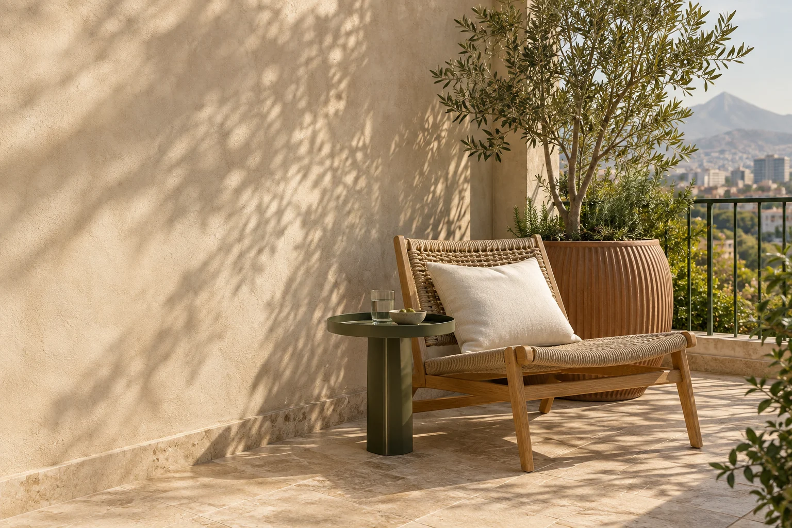

DIARIO PATIO / Habitar afuera
Un balcón pequeño también puede ser tu lugar favorito
No hace falta llenarlo. Un propósito claro y tres piezas bien elegidas pueden cambiar la forma en que lo usas.

Empieza por un momento
Antes de elegir muebles, piensa en un momento que te gustaría vivir ahí: el primer café, unas páginas después de almuerzo o una conversación al final del día. Diseñar alrededor de una costumbre ayuda a elegir lo que de verdad vas a usar. Un balcón pequeño puede funcionar muy bien cuando tiene un propósito claro.
Haz espacio para moverte
Mide el espacio con la puerta abierta y marca en el suelo el tamaño de cada pieza. Puedes hacerlo con cinta de papel. Prueba el recorrido, imagina dónde irán tus pies y deja libre el paso hacia las plantas. Ese espacio vacío también forma parte del rincón: permite moverse y hace que todo se sienta más liviano.
Elige lo esencial
Empieza con un asiento cómodo, una superficie de apoyo y una planta que se adapte a la luz disponible. Las formas redondas suavizan los encuentros en pocos metros. Si eliges madera clara y un solo tono de verde, la terracota puede sumar calidez sin que tengas que coordinar demasiados colores.
Deja que crezca contigo
Después de usarlo unos días, agrega lo que te haya faltado: un cojín para leer mejor, una luz portátil o una manta para cuando refresque. Construir el espacio de a poco permite que responda a tu rutina. La mejor señal de que quedó bien es que empieces a salir más seguido.
Un poco de afuera.
Una forma de estar.